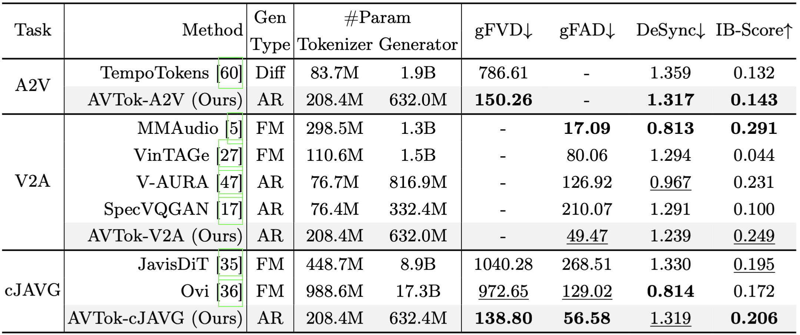
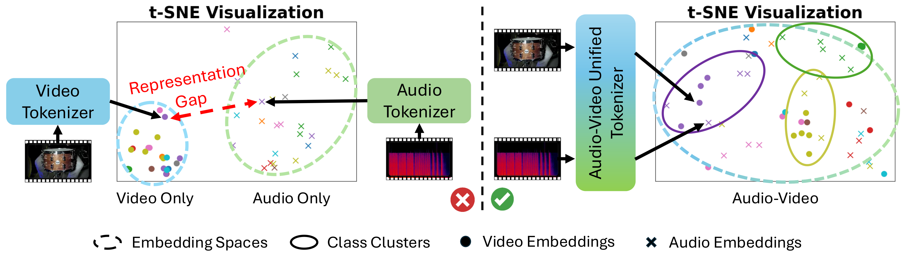
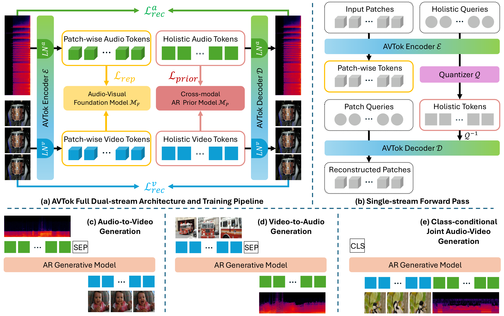
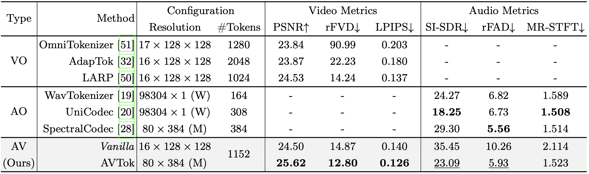
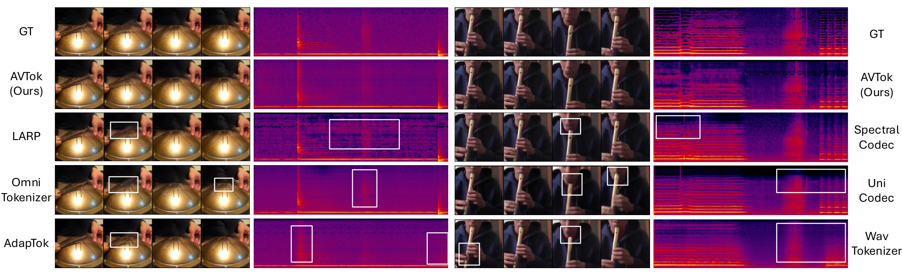

Generation Results


Audio-video generation has recently gained unprecedented research attention, aiming to synthesize high-quality sounding video content with fine-grained synchronization and semantic alignment between the auditory and visual components. The preceding methods predominantly adopt a dual-branch design with separate tokenization and generation modules per modality, neglecting the representation gap while necessitating intensive computational resources for proper training. Inspired by recent advancements in one-dimensional visual tokenization, we present AVTok, a novel unified tokenizer designated for holistic audio-video generation. AVTok features a dual-stream transformer-based architecture with shared encoder-decoder and modal-specific learnable queries to efficiently and effectively encode an audio-video pair into a compact one-dimensional latent representation with a unified codebook. To cope with the heterogeneous information imbalance that hinders AVTok from exploiting aligned audio-visual information, we devise a hierarchical training strategy to progressively realize reconstruction capabilities for each modality. Extensive experiments demonstrate that AVTok excels both in audio-video reconstruction and when integrated into downstream pipelines for audio-to-video, video-to-audio, and class-conditional joint audio-video generation. AVTok paves the way for the challenge of joint audio-video tokenization and provides a potential direction to build unified large multimodal models for audio-video generation.





Every clip below is a sounding video (video + audio in one file). Hover over a clip to play, or click to pin it on/off.
@inproceedings{pham2026avtok,
title = {AVTok: 1D Unified Tokenization for Holistic Audio-Video Generation},
author = {Pham, Kien T. and Chen, I Chieh and Chen, Qifeng and Chen, Long},
booktitle = {Proceedings of the European Conference on Computer Vision (ECCV)},
year = {2026}
}